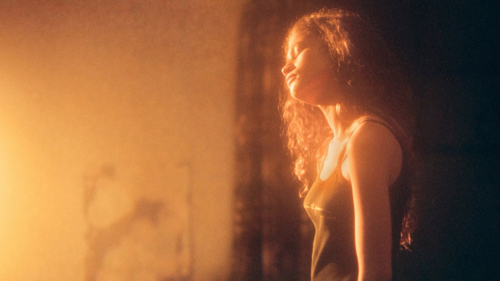
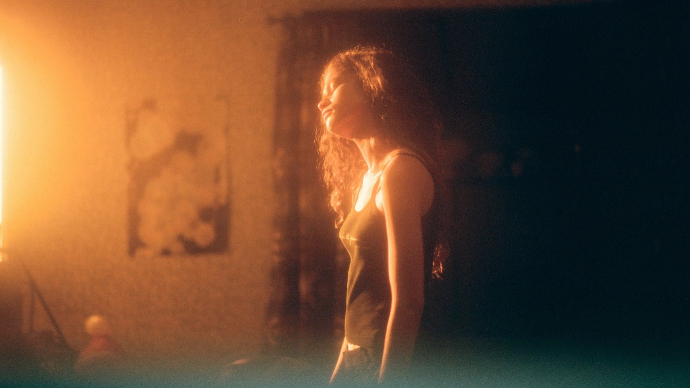

Euphoria – Stagione 1
Nel 2019 Sam Levinson e Zendaya portarono il teen drama dentro la testa di una ragazza dipendente. Per noi resta il capitolo migliore della serie, anche quando si compiace dei suoi eccessi
La prima stagione di Euphoria è ancora oggi il ritratto più lucido della dipendenza che la televisione abbia offerto a un pubblico giovane, perché non la osserva da fuori: ce la fa vivere dalla testa di chi la subisce. Eppure, quando debuttò su HBO il 16 giugno 2019, un'associazione di genitori americana l'aveva già bollata come «programmazione gravemente irresponsabile» prima ancora dell'uscita. Rivista oggi, dopo un secondo capitolo più cupo e un terzo che ha diviso tutti, ha un limite che non nascondiamo: uno sguardo che a volte si compiace di ciò che dovrebbe soltanto mostrare. Ma è qui che Euphoria ha trovato la sua voce, e quella voce appartiene a Zendaya.
Di cosa parla la prima stagione
Rue Bennett ha diciassette anni ed è appena uscita da un centro di riabilitazione. Però non ha nessuna intenzione di restare pulita, e lo confessa subito a noi, perché è lei a raccontare la storia. Il primo giorno di scuola incontra Jules, appena arrivata in città, e tra le due nasce il legame che regge tutti gli otto episodi. Intorno a loro si muove una classe intera, guidata da Nate, il campione di football con una rabbia che non sa controllare, e dalla sua fidanzata Maddy. Ogni puntata si apre allora con il passato di uno dei compagni, che Rue racconta con il tono di chi sa già come andrà a finire.
Il dettaglio che cambia la visione
Sulla carta Euphoria adatta una serie israeliana del 2012 ideata da Ron Leshem e Daphna Levin. Il cuore della versione americana, però, viene da un'altra parte. Levinson infatti cominciò a scriverla nel 2006 partendo dalla propria adolescenza, segnata dalla depressione e dalla dipendenza dalle droghe, compresi i periodi in riabilitazione. Saperlo cambia il modo in cui si ascolta la voce narrante di Rue, che accompagna ogni puntata: le sue bugie e l'ironia con cui minimizza il pericolo hanno la precisione di chi le ha pronunciate davvero.
Il responsabile dei drammi di HBO la presentò come un incrocio tra «Kids» e «Trainspotting» senza adulti a sorvegliare. Il paragone è da ufficio stampa, ma aiuta a capire che cosa Levinson abbia preso e che cosa abbia lasciato. Del film di Larry Clark conserva infatti la crudezza sui ragazzi, mentre da quello di Danny Boyle riprende l'euforia visiva della droga. Ci aggiunge però una tenerezza che in entrambi mancava, quindi Rue non diventa mai un caso clinico.

Il luna park dell'episodio 4
La quarta puntata, «Shook Ones Pt. II», si apre in un luna park di periferia. La macchina da presa entra tra le giostre e, in un movimento continuo di una decina di minuti, ci presenta i personaggi uno dopo l'altro: la famiglia di Nate allo stand della gara di peperoncino, poi Fezco al chiosco dei salatini, infine Rue che cerca tra la folla la sorellina Gia. Luci e fuochi d'artificio si sommano fino al sovraccarico, ma niente è lì per caso. Qui la serie dimostra che il suo stile non è decorazione, perché la camera che passa da una storia all'altra è il liceo stesso, dove tutti si osservano ma nessuno si conosce davvero.
Nella stessa sera arriva il momento più duro. Maddy rovescia la pentola della gara di peperoncino davanti a tutti e se ne va. Poi, a casa, nello specchio del bagno scopre il livido che la presa di Nate le ha lasciato sul collo e scoppia a piangere. Con quel pianto il racconto, che fino a lì sembrava divertirsi con la rabbia di Nate, ci fa sentire il peso di ciò che abbiamo appena guardato. Sempre tra le giostre Jules scopre chi si nascondeva dietro l'amico conosciuto online, ma questa rivelazione ve la lasciamo scoprire.
La scena che vale la stagione
Arriva nel finale, «And Salt the Earth Behind You», scritto e diretto da Levinson. La notte del ballo d'inverno Rue e Jules si ritrovano sul binario di una stazione, davanti al bivio che decide tutto. Zendaya recita quasi soltanto con gli occhi, quindi la vediamo capire, un attimo prima di dirlo, che cosa sceglierà. Poi, quando ormai ci aspettiamo un addio silenzioso, l'episodio compie il gesto più audace e si trasforma in un musical. Rue canta una nuova versione di «All for Us» di Labrinth, circondata da un coro in tunica bordeaux, finché scala una montagna di corpi ed esce dall'inquadratura. Poteva risultare ridicola, invece è la sequenza più sincera dello show, perché ciò che Rue non riesce a confessare a nessuno diventa una canzone gridata davanti a tutti.

Cosa funziona: Zendaya e la dipendenza vista da dentro
Il merito più grande sta nel punto di vista, quindi in Rue. Rue infatti non è un esempio da evitare: è una narratrice spiritosa e bugiarda, che ci convince a ridere con lei proprio mentre si fa del male. Zendaya tiene insieme sarcasmo e disperazione nella stessa battuta, e per questo il giudizio di Rotten Tomatoes parla di un'interpretazione «potentemente misurata». Gli altri, però, non restano a guardare e le crescono accanto. Hunter Schafer dà a Jules una leggerezza che non è mai superficialità, mentre Angus Cloud rende umano lo spacciatore Fezco senza addolcirlo. Anche la forma, poi, partecipa al racconto: il trucco con i brillantini, finito presto nelle sfilate e nei filtri dei social, insieme alle musiche ipnotiche di Labrinth costruisce uno stato d'animo prima ancora di una trama.
Cosa non funziona
Il difetto sta proprio nella parte che più ricorda la formula di HBO. Levinson ha difeso le scene di sesso e droga sostenendo che dovessero aprire un dialogo tra genitori e figli. Le associazioni che la attaccarono contestavano soprattutto il materiale sessuale tra personaggi adolescenti, e su questo punto diamo loro in parte ragione: troppo spesso il racconto sembra costruito per far parlare più che per farci capire, e la nudità di personaggi minorenni, interpretati da attori adulti, torna con un'insistenza che la storia non giustifica. Anche la struttura a ritratti mostra la corda, perché non tutti i personaggi reggono una puntata intera. La relazione tra Cassie e McKay gira a vuoto per settimane, tanto che perfino chi aveva amato la puntata del luna park, come Bryan O'Donnell su TV Obsessive, la trovava la parte meno coinvolgente.
Il confronto con i capitoli successivi
Basta mettere a confronto due momenti di Rue per capire la differenza. Nel primo capitolo il binario della stazione è un luogo minuscolo dove due ragazze aspettano un treno, quindi tutto il peso sta in uno sguardo. Nel terzo, del 2026, la Rue adulta cerca un appiglio nella fede mentre il lavoro la trascina in situazioni sempre più pericolose, ma il racconto cambia direzione a ogni puntata, come spieghiamo nella nostra recensione di Euphoria – Stagione 3. In mezzo c'è il secondo, uscito tra gennaio e febbraio 2022, che porterà lo stile all'estremo. Nel 2019, invece, la regia lavora nella stessa direzione degli attori, perciò ogni eccesso visivo ha ancora un appiglio nei personaggi. Se si vuole capire perché Euphoria sia diventata un caso, allora bisogna ripartire da qui.
Come fu accolta
In patria raccolse una media di circa 560mila spettatori per episodio sulla televisione tradizionale, ma arrivò a 6,6 milioni contando tutte le piattaforme nei primi novanta giorni. Anche la critica la accolse bene: su Rotten Tomatoes ha l'80% di recensioni positive su 100, mentre Metacritic le assegna 68 su 100. Agli Emmy del 2020, infine, vinse quattro premi. Zendaya fu premiata come attrice protagonista in una serie drammatica, Labrinth ne vinse due per le musiche e la squadra del trucco ottenne quello per il make-up non protesico.
Vale la pena vederla?
Sì, se cercate un racconto dell'adolescenza senza prediche e reggete scene esplicite di droga e di sesso. Chi sta attraversando una dipendenza, o l'ha vissuta in famiglia, sappia però che certe ricadute sono mostrate senza filtri. Chi ha visto soltanto gli episodi del 2026 troverà invece qui le radici di tutto ciò che è venuto dopo, a cominciare dalla Rue ragazzina che la terza parte ha lasciato alle spalle.
La prima stagione di Euphoria resta il capitolo migliore della serie: eccede su corpi e sostanze, ma nessun teen drama aveva mai fatto sentire la dipendenza così da vicino, e il musical del finale vale da solo la visione.
Domande frequenti
Quanti episodi ha la prima stagione di Euphoria?
Otto, andati in onda su HBO dal 16 giugno al 4 agosto 2019. Il quarto e l'ottavo sono scritti e diretti da Sam Levinson.
Quando è uscita Euphoria in Italia?
È arrivata su Sky Atlantic in tre serate, dal 26 al 29 settembre 2019, con tutti gli episodi disponibili anche on demand.
Dove vedere la prima stagione di Euphoria?
In Italia tutti gli episodi della serie sono disponibili in abbonamento su Sky e NOW.
Euphoria è tratta da un'altra serie?
Sì, è l'adattamento americano di una serie israeliana del 2012 ideata da Ron Leshem e Daphna Levin.
Fonti consultate (11)
- Wikipedia – Euphoria season 1
- Wikipedia – Euphoria (American TV series)
- Wikipedia – Euphoria season 3
- Wikipedia – Shook Ones Pt. II (Euphoria)
- Wikipedia italiana – Euphoria (serie televisiva)
- Rotten Tomatoes – Euphoria stagione 1
- TV Obsessive – Euphoria finds its stride in Shook Ones Pt. II
- Blavity / Shadow and Act – All for Us, la canzone del finale
- /Film – Euphoria season 1 ending explained
- TV Sorrisi e Canzoni – Euphoria arriva in Italia
- TMDB – scheda e dove vederla in Italia